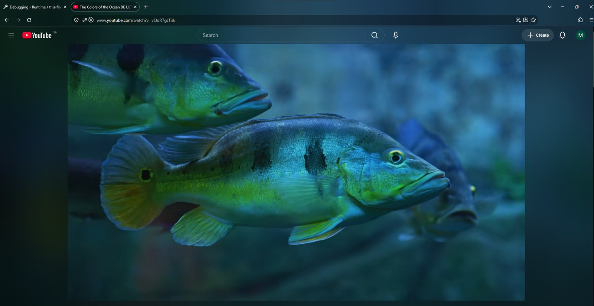
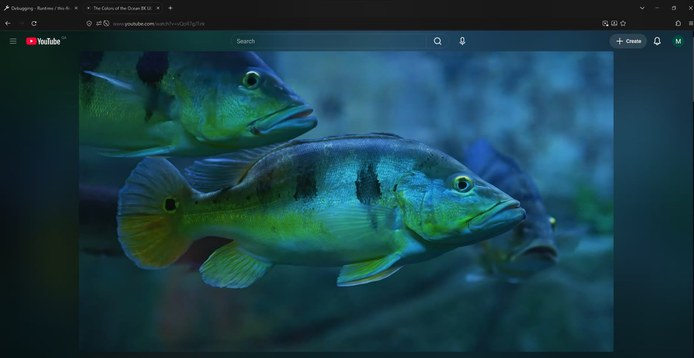
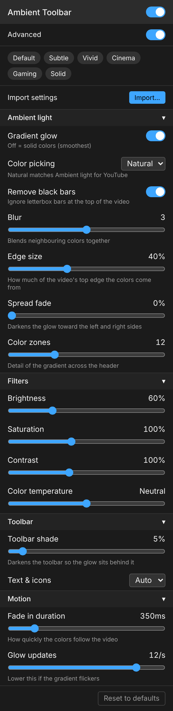

Ambient Toolbar is a Firefox add-on that tints your tab bar and toolbar in real time to match the YouTube video you're watching. It's like ambient light that reaches past the video and into the browser.
Works on its own. An independent project, not affiliated with Ambient light for YouTube.


Off OnReal screenshots, shown with Ambient light for YouTube's glow around the video. The “Off” side is the same screenshot with the toolbar's tint removed.
Built to blend with the glow around the video.
Open the toolbar button, or go to Add-ons → Ambient Toolbar → Options. Changes apply live, even while paused. Turn on Advanced to see every option.

Ambient light for YouTube adds a glow around the video, and Ambient Toolbar carries it up into the tab bar and toolbar. Each works on its own, but together the whole window glows.
Independent, and optional. Ambient Toolbar is an independent project and isn't affiliated with Ambient light for YouTube. You don't need it installed.
The default look is calibrated against Ambient light's glow, so the two blend without any setup.
Toolbar popup → Import / Export…, and choose an Ambient light settings export. Its edge size, spread and fading are converted for you.
The settings from these screenshots are in the presets folder: one file for Ambient light, and a one-click Recommended preset in Ambient Toolbar.
Firefox doesn't let add-ons draw into the toolbar, but it does let them change the window's theme.
browser.theme.update. It sets the colors, plus a 1-pixel glow strip layered over the previous one so it doesn't flicker.Requires Firefox 142 or newer. DRM-protected videos (some movies and rentals) can't be sampled.
Add to FirefoxThe easiest way, with automatic updates: addons.mozilla.org.
Download the signed .xpi from Releases and drag it into Firefox.
Open about:debugging → This Firefox → Load Temporary Add-on, and choose extension/manifest.json.